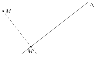
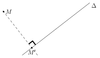
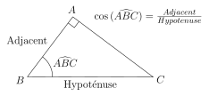

Projete Orthogonal
Table of Contents
1. Définitions
On considère \(M\) un point du plan, et \(\Delta\) une droite du plan, qui ne passe pas par \(M\).
On peut donner plusieurs définitions équivalentes aux projeté orthogonal.
Le projeté orthogonal d’un point \(M\) sur une droite \(\Delta\) est le point \(M'\) tel que la distance \(MM'\) est minimale.

2. Pourquoi ce point existe ?
La distance entre un point \(M'\) qui appartient à la droite \(\Delta\) et le point \(M\) est une fonction qui dépend de la position de \(M'\) sur la droite.
Mais cette fonction ressemble à une parabole, puisque si l’on connaît les coordonnée de \(M\) et de \(M'\), on sait que : \[ MM'^{2} = (x_{M'} - x_{M})^{2} + (y_{M'} - y_{M})^{2} \]
Autrement dit, la fonction \(M' \mapsto MM'^{2}\) ressemble à une parabole (il y a des carrés dans la formule, ce n’est pas un argument suffisant, c’est un argument que l’on appelle «heuristique», qui repose sur l’intuition plutôt que de la formalisation pure. Mais vous pouvez me faire confiance ici, cela fonctionne bien) ! Donc, cette parabole admet un point minimale atteint pour un certain point \(M'_{0}\), qui est le projeté orthogonale de \(M\) sur la droite \(\Delta\).
La puissance de feu des mathématiques en action ! Ce raisonnement se retrouve dans de très nombreux domaines, notamment… Dans les algorithmes de deep learning (!).
3. Approche géométrique
Le projeté d’un point \(M\) sur une droite \(\Delta\) est le point \(M'\) tel que l’angle entre \(\Delta\) et \(M'M\) est droit.
Les deux définitions sont équivalentes ! C’est-à-dire que trouver le point \(M'\) tel que la distance entre \(M'M\) est le minimum revient à tracer la perpendiculaire à la droite \(\Delta\) qui passe par \(M\) !
Remarquez l’angle droit formé sur la figure ci-contre (qui a la même configuration que la figure précédente.)

4. Trigonométrie
4.1. Définitions
On considère un triangle rectangle ABC rectangle en A. Alors, on définit la fonction \(\cos\) de l’angle \(\widehat{ABC}\) par : \[ \cos(\widehat{ABC}) = \frac{AB}{BC} = \frac{\text{Adjacent}}{\text{Hypoténuse}} \]
